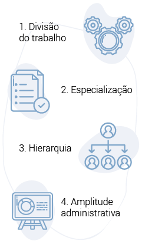
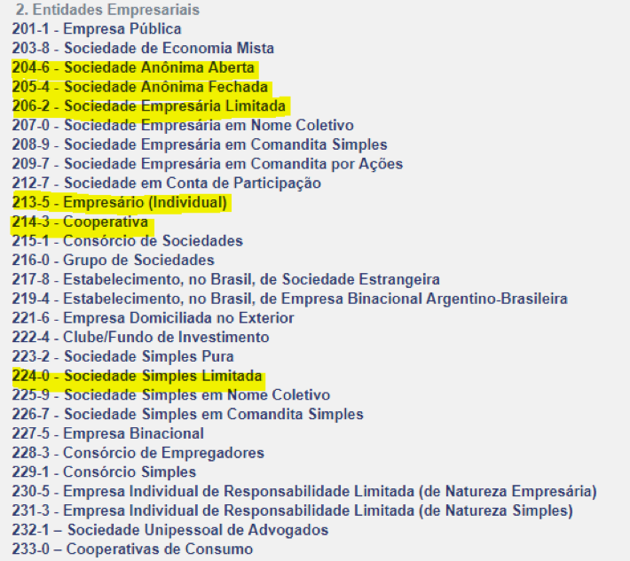
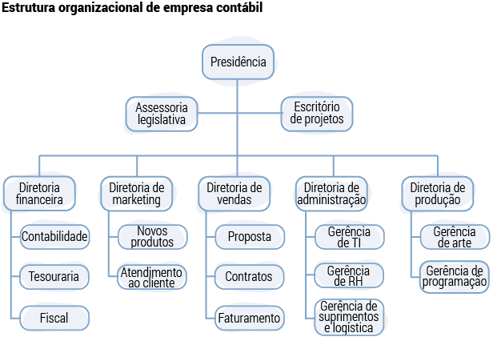
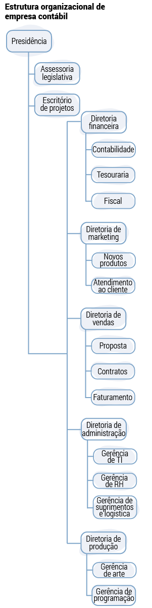
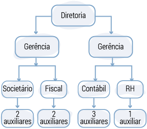
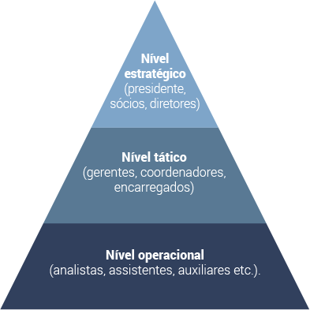
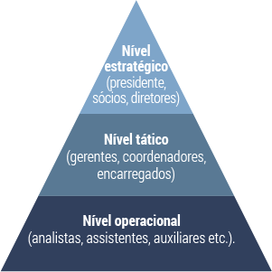
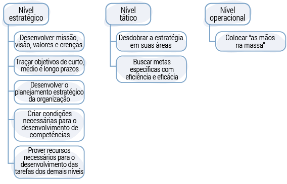
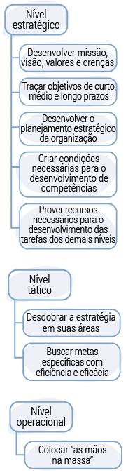

As organizações têm origem na sua abertura junto aos órgãos regulamentadores. Esse evento ocorre com a ajuda de um profissional da área de contabilidade. Depois da abertura, é necessário realizar todo o controle contábil, mantendo tudo organizado e dentro da lei, pois, se a empresa não tiver esse controle, as consequências são desastrosas, tais como impostos atrasados, multas para o Fisco, entre outras. Por isso, o técnico em contabilidade é a figura fundamental que auxilia o contador em uma organização.
Imagine como seria uma organização sem um controle contábil.
O técnico em contabilidade apoia a gestão das organizações, escriturando atos e fatos administrativos, realizando lançamentos contábeis, cuidando do controle financeiro, emitindo as guias para recolhimento de impostos, entre tantas coisas.
Portanto, para que o técnico em contabilidade exerça sua função eficaz e eficientemente, é necessário conhecer um pouco do funcionamento das organizações.
Confira a seguir um resumo sobre a definição, os principais tipos, a classificação e a natureza jurídica das organizações e, ainda, alguns exemplos de organogramas.
Uma organização é formada pelo esforço de várias pessoas que se unem e trabalham visando a um objetivo comum. Ela também é formada por todos os recursos necessários para o seu funcionamento, como máquinas, equipamentos, bens etc.
As organizações fazem parte do dia a dia das pessoas. As necessidades destas, como roupa, serviços de saúde, transporte, segurança, educação, alimentos, são supridas por organizações o tempo todo.
Os autores da teoria neoclássica da administração, considerada a escola mais eclética, preocupavam-se com a prática administrativa, tendo como foco a busca por objetivos e resultados (CHIAVENATO, 2014). Para eles, o conceito de organização parte do ponto de que um grupo de pessoas está organizado e obedece a uma hierarquia, e cada uma dessas pessoas sabe o comportamento a ser adotado com relação ao grande grupo.
Com base nessa percepção de organização, surgem os princípios fundamentais da administração. São eles:
A divisão do trabalho nada mais é do que a separação das tarefas por especialização. A especialização é uma consequência da divisão do trabalho, uma vez que cada setor passa a ter funções específicas. Em um escritório de contabilidade, por exemplo, as tarefas normalmente são divididas entre o setor societário, contábil, fiscal e pessoal. A organização também precisa de uma estrutura hierárquica, por níveis de autoridade, para poder controlar as operações. Por fim, a amplitude administrativa diz respeito ao número de funcionários que um administrador pode supervisionar.
Como a escola neoclássica focava nos resultados, era muito importante que todas as pessoas envolvidas conhecessem os conceitos de eficácia e eficiência, os quais são importantes até os dias de hoje.
O diferencial do profissional de contabilidade está em conhecer e saber executar os conceitos de eficácia e eficiência no dia a dia.
A eficácia refere-se a alcançar o resultado. Já a eficiência diz respeito ao valor que foi gasto para alcançar o resultado, além de se preocupar em fazer as coisas da melhor forma possível. Para que a função de técnico em contabilidade seja eficaz e eficiente, entre tantas coisas, é necessário conhecer os principais tipos de organizações.
Qual é a diferença entre uma organização e uma empresa?
O conceito de organização é bem mais amplo do que o de uma empresa, pois uma organização pode ser: uma loja, uma indústria, um clube, uma igreja, uma organização não governamental (ONG), uma associação. A diferença entre organização e empresa é que o objetivo das empresas é obter lucro.
Por exemplo, uma ONG sobrevive com doações e campanhas que são desenvolvidas na comunidade onde atua, sendo, portanto, uma organização sem fins lucrativos. Já uma fábrica de roupas tem como objetivo principal obter lucro por meio das vendas realizadas.
Como técnico em contabilidade, você precisa saber reconhecer as modalidades de organizações, pois todo o controle contábil dependerá do tipo de organização à qual você prestará o serviço.
Existem vários tipos de organizações e empresas, as quais são classificadas de acordo com a atividade exercida, o tamanho, a natureza jurídica, os objetivos, a estrutura do capital, o faturamento etc.
Elas são capazes de suprir todos os tipos de bens e serviços que a sociedade necessita, sendo classificadas, inclusive, pelos seguintes aspectos:
De acordo com as atividades que realizam, as empresas podem pertencer ao ramo do comércio, da indústria ou da prestação de serviços.
No setor do comércio, estão as empresas que trabalham com o comércio de mercadorias (lojas de calçados, roupas, alimentos etc.).
No setor da ind√∫stria, est√£o as empresas que produzem algum tipo de produto (ind√∫stria de bens de consumo, por exemplo).
Na área de prestação de serviços, estão todas as empresas que prestam serviços (o Senac, por exemplo).
Embora as empresas de comércio não tenham como finalidade principal a prestação de serviços, elas também podem trabalhar com serviços. É o caso de uma loja que vende celulares e presta serviços de conserto.
Segundo a Lei Complementar n.º 123, de 14 de dezembro de 2006, a classificação quanto ao porte é feita de acordo com o faturamento bruto anual:
Empresas que faturam anualmente até R$ 81 mil.
Empresas que faturam anualmente até R$ 360 mil.
Empresas que faturam anualmente mais que R$ 360 mil e menos ou igual a R$ 4,8 milhões.
Empresas que faturam anualmente mais que R$ 4,8 milhões.
As empresas também podem ser classificadas quanto à natureza jurídica:
Empresa formada por uma só pessoa.
Empresa formada por uma só pessoa.
Empresa formada por duas ou mais pessoas, com exceção da sociedade limitada unipessoal (SLU), que poderá ser formada por apenas uma pessoa.
Formada por um grupo de pessoas.
Todas as empresas recolhem impostos, taxas e contribuições para os governos federal, estadual e municipal. Em função do faturamento, do tipo de atividade, por opção ou mesmo por determinação legal, as empresas adotam um regime de tributação para o pagamento dos tributos.
Por que um técnico em contabilidade precisa conhecer a tributação?
É importante saber que, dependendo da área de atuação, do porte, da natureza jurídica e do tipo de organização jurídica, a empresa pode ou não pagar tributos.
Como eles são calculados sobre o faturamento, a tributação ocorre somente com empresas que têm um faturamento mensal.
O técnico contábil precisará conhecer todos os regimes de tributação existentes, pois todo o trabalho da contabilidade dependerá do tipo de tributação da organização
Veja a seguir os regimes de tributação existentes:
O Simples Nacional é uma forma simplificada e unificada para recolher impostos. É a união de vários impostos em uma única guia de recolhimento, qual seja o Documento de Arrecadação do Simples Nacional (DAS).
No regime de tributação de lucro presumido, realiza-se uma estimativa sobre o faturamento, tendo a empresa que pagar um percentual de imposto de renda (IR), Programa de Integração Social (PIS), Contribuição para o Financiamento da Seguridade Social (Cofins) e a Contribuição Social sobre o Lucro Líquido (CSLL), por meio de uma guia de recolhimento denominada de Documento de Arrecadação de Receitas Federais (DARF). Se a empresa for prestadora de serviços, ela terá que pagar o imposto sobre serviços (ISS) para a prefeitura; caso trabalhe com comércio, deverá pagar o imposto sobre circulação de mercadorias e serviços (ICMS) para o estado.
No regime de lucro real, os impostos são calculados depois da apuração do resultado da empresa (lucro ou prejuízo) e de todos os acréscimos de receita e reduções do lucro autorizados pela legislação do IR. As sociedades anônimas são obrigadas a adotar o regime de tributação do lucro real. A empresa pagará o IR, o PIS, a Cofins e a CSLL. Se a empresa for prestadora de serviços, ela terá que pagar o ISS para a prefeitura; caso trabalhe com comércio, deverá pagar o ICMS para o estado.
As organizações e as empresas estão organizadas, juridicamente, da seguinte forma:
O primeiro setor é formado pelo Estado; o segundo, pelas empresas privadas; e o terceiro, pelas ONGs.
A sociedade está dividida em três grandes setores:
O primeiro setor é formado pelo estado, que representa o governo. Tal setor tem como responsabilidade prestar serviços à sociedade e compreende as organizações de serviço público, representadas pelas prefeituras municipais e pelos governos estaduais e federais. Portanto, cabe ao estado:
O segundo setor, também conhecido como setor produtivo, é formado pelo mercado, que representa as empresas que visam ao lucro.
O terceiro setor é formado pelas organizações não governamentais e sem fins lucrativos, que têm como objetivo ajudar o estado nas questões sociais (por exemplo, as ONGs).
Esses três setores interagem entre si para que a sociedade possa se estruturar e se desenvolver de forma mais organizada.
Outro ponto importante quanto às organizações é a sua natureza jurídica. Anteriormente, no tópico sobre tipologia, você leu um pouco sobre a organização jurídica, mas agora conhecerá mais profundamente cada uma delas.
A natureza jurídica de uma empresa está relacionada à sua classificação, ou seja, cada negócio tem o próprio código que descreve a sua natureza jurídica. Tal classificação foi criada para que os órgãos públicos possam enquadrar as empresas nos diferentes programas disponíveis, pois existem distintos programas de incentivos e tabelas para cálculo dos impostos, dependendo da natureza jurídica.
Trata-se de uma organização da Receita Federal, na qual existe um código específico para cada tipo de natureza jurídica.
Acesse o site do IBGE e pesquise “tabela de natureza jurídica”. Você encontrará a tabela completa com o código da natureza jurídica para todo tipo de organização.
Observe a seguir um recorte da tabela referente às entidades empresariais, no qual têm-se as sociedades anônimas, as sociedades limitadas, o empresário individual, as cooperativas, as sociedades simples etc.
Figura 1 – Tabela de entidades empresariais
Fonte: <https://concla.ibge.gov.br/estrutura/natjur-estrutura/natureza-juridica-2018>.
A imagem mostra um recorte da Tabela de Natureza Jurídica disponível no site do IBGE, com algumas naturezas jurídicas que podem ser aplicadas para todos os tipos de organizações.
Quando uma empresa é criada, um dos documentos que a Receita Federal emite é o cadastro nacional da pessoa jurídica (CNPJ). Nele, constam todos os dados da empresa, inclusive a natureza jurídica.
Figura 2 – Comprovante de inscrição e situação cadastral
Fonte: <https://www.receita.fazenda.gov.br/PessoaJuridica/CNPJ/cnpjreva/Cnpjreva_Solicitacao.asp> (para acessar a imagem, digite o CNPJ no campo e consulte).
A imagem apresenta um documento de CNPJ, com destaque para o item “natureza jurídica”.
Pesquise, no site da Junta Comercial do Rio Grande do Sul, as empresas que abriram e veja que existem seis tipos de empresas diferentes somente na Junta Comercial.
Observe a seguir os principais tipos de empresas encontrados no mercado:
Se o empreendedor deseja abrir um negócio sozinho, existe a opção de ser um empresário individual. O empresário individual, como o próprio nome diz, exerce a atividade empresarial individualmente. Além disso, tem responsabilidade ilimitada, respondendo com os bens pessoais pelas obrigações assumidas.
Ele pode exercer atividades comerciais, industriais ou de prestação de serviços, com exceção de serviços de profissão intelectual (natureza científica, literária ou artística, como médicos, psicólogos, engenheiros, entre outros). Ainda pode trabalhar como autônomo ou abrir uma sociedade simples.
Se o negócio for pequeno e não precisar de muitos funcionários, a melhor opção é ser microempreendedor individual (MEI). O MEI foi uma forma que o governo encontrou de formalizar o negócio de muitos empreendedores que viviam na informalidade.
O MEI pode ter uma receita bruta de até R$ 81 mil no ano e empregar um funcionário no máximo. Ademais, não pode ser titular ou sócio de outra empresa e ter filiais.
Para assessorar com eficácia e eficiência as empresas, você, em sua função de técnico em contabilidade, precisa conhecer os tipos de sociedades empresariais existentes.
O conceito de sociedade é comumente idealizado como uma organização formada por duas ou mais pessoas, mas essa definição mudou desde 2019. Leia a seguir o artigo 981 do Código Civil (Lei n.º 10.406, de 10 de janeiro de 2002), que trata das sociedades empresariais:
Art. 981. Celebram contrato de sociedade as pessoas que reciprocamente se obrigam a contribuir, com bens ou serviços, para o exercício de atividade econômica e a partilha, entre si, dos resultados.
Ao ler o artigo, percebe-se que uma sociedade empresarial é formada quando duas ou mais pessoas se reúnem com o mesmo propósito, contribuindo com bens ou serviços e objetivando repartir os resultados obtidos. Para tanto, elas exercem atividades de natureza econômica, seja na produção e na circulação de bens, seja na prestação de serviços.
Agora, observe o parágrafo 1.º do artigo 1.052 do mesmo Código Civil (incluído pela Lei nº 13.874, de 2019).
Art. 1.052. Na sociedade limitada, a responsabilidade de cada sócio é restrita ao valor de suas quotas, mas todos respondem solidariamente pela integralização do capital social. (Vigência)
§ 1.º A sociedade limitada pode ser constituída por 1 (uma) ou mais pessoas. (Incluído pela Lei nº 13.874, de 2019)
Em setembro de 2019, foi instituída a Lei da Liberdade Econômica, convertida na Lei n.º 13.874, que ampliou esse conceito dizendo que as sociedades limitadas poderão ser constituídas por uma ou mais pessoas.
Veja agora os tipos mais conhecidos de sociedade:
A sociedade limitada é conhecida por Ltda., porque a responsabilidade dos sócios é limitada ao capital, é a sociedade mais comum no Brasil. Os sócios só respondem pelas obrigações sociais com o capital investido, e não com bens particulares. A constituição da empresa ocorre com o deferimento do contrato social na Junta Comercial.
Criada a partir da Lei n.º 13.874, de 2019, esse tipo de sociedade é chamada de unipessoal por ser uma representação jurídica individual, mas com responsabilidade Ltda.
Caso a sociedade tenha apenas um sócio, a responsabilidade está limitada ao capital social, com garantia de proteção do patrimônio particular, sem limitação de faturamento, como é o caso da MEI, e sem o limite mínimo de capital social para iniciar a empresa, por exemplo. A constituição da empresa ocorre com o deferimento do contrato social na Junta Comercial.
As sociedades anônimas (S/As) também são sociedades empresárias, mas, diferentemente das sociedades limitadas, são reguladas pela Lei n.º 6.404/1976. O capital social não é atribuído a uma pessoa, mas, sim, dividido em ações com as pessoas que participam da formação do capital. Essas pessoas são chamadas de acionistas.
As ações representam pequenas partes da empresa, fazendo com que o investidor seja um pouco “dono” do negócio.
Existem dois tipos de ações:
O investidor que deseja ter mais influência deve optar pelas ações ordinárias. Já aquele que não quer muito envolvimento deve investir nas ações preferenciais.
O tipo de sociedade anônima é mais complexo. Por isso, ele é recomendado somente para as grandes empresas.
A sociedade simples (S/S) é muito utilizada por médicos, dentistas, arquitetos, contadores etc., pois foi criada para a prestação de serviços de profissão intelectual.
O registro não é realizado na Junta Comercial, mas, sim, no cartório de registro civil de pessoas jurídicas. A responsabilidade dos sócios também é limitada.
A característica básica de uma sociedade cooperativa é a prestação de serviços aos seus associados. Aquelas pessoas que já operam no mesmo campo econômico estão impossibilitadas de ingressar na cooperativa, segundo o artigo 29, parágrafo 4.º, da Lei n.º 5.764, de 16 de dezembro de 1971.
Observe estas três características da sociedade cooperativa:
Como exemplo, pode-se citar a Unimed, que é considerada a maior cooperativa de saúde do mundo.
Você acabou de ver as principais empresas que atuam no mercado de trabalho. É muito importante que você conheça mais um pouco cada uma delas, pois, ao exercer a função de técnico em contabilidade, terá contato direto com esses tipos de empresas.
Veja agora como as empresas mencionadas nascem e quais são os documentos importantes que você precisa conhecer para exercer a profissão de técnico em contabilidade.
Para uma sociedade ganhar personalidade jurídica, é necessário inscrever o contrato social ou o estatuto no órgão de registro próprio, adquirindo, assim, capacidade jurídica para assumir direitos e obrigações.
O Código Civil determina:
Art. 997. A sociedade constitui-se mediante contrato escrito, particular ou p√∫blico.
Portanto, segundo o artigo citado, a constituição da empresa somente ocorrerá quando da emissão do contrato social ou do estatuto.
Você já teve acesso a um contrato social ou um estatuto?
O contrato social é a certidão de nascimento de uma pessoa jurídica. Nele, estão todas as regras sob as quais a empresa deve funcionar. Também estão estabelecidos os direitos e as obrigações de cada um dos sócios da sociedade.
Observe o modelo de contrato social utilizado pela Junta Comercial do Rio Grande do Sul.
Baixar PDFO contrato social deve conter, basicamente, as cláusulas indicadas no artigo 997 do Código Civil e outras específicas para que a empresa possa desenvolver a atividade dela.
O contrato sempre deve iniciar com todos os dados dos sócios seguidos das cláusulas que o regem. Você, como técnico em contabilidade, precisa conhecer as principais cláusulas. São elas:
As demais cl√°usulas mudam eventualmente, dependendo da sociedade.
O estatuto social é utilizado pelas sociedades anônimas, pelas cooperativas e também pelas organizações sem fins lucrativos. Nesses casos, a empresa é constituída com o registro do estatuto social, segundo a Lei n.º 6.404, de 1976.
Nas sociedades anônimas, o primeiro passo para realizar o estatuto é convocar uma assembleia de constituição, contando com a participação de subscritores, que representam, no mínimo, metade do capital social. Se os subscritores (acionistas) não se opuserem, o líder da assembleia geral poderá declarar a companhia constituída.
Basicamente, nas cl√°usulas do estatuto destacam-se:
Pesquise o título “Modelo de estatuto de sociedade anônima” na Internet, para saber mais.
Agora que você já conhece um pouco mais os tipos de organizações, veja a seguir como elas se estruturam internamente.
O mundo dos negócios é muito complexo. Por isso, para desempenhar todas as atribuições, as organizações são compostas por departamentos ou setores. O nome dado a essa composição é estrutura organizacional.
Quando se fala em estrutura organizacional, qual é a imagem que você imagina?
Provavelmente, a imagem que você imaginou seja a de um organograma.
Isso porque a representação gráfica da estrutura organizacional de uma empresa é o organograma.
Analisando a imagem anterior, percebe-se que o organograma é um gráfico que mostra como a empresa está hierarquicamente organizada. Ele representa a divisão de setores ou departamentos e cargos que existem na empresa. Além disso, também tem o objetivo de deixar claro para os colaboradores e os stakeholders (pessoa ou grupo que tem interesse em investir na empresa) como eles estão dentro da organização e com que áreas ou pessoas estão ligados.
Observe a seguir o modelo de organograma de uma grande empresa e a posição da contabilidade.
 
Figura 3 – Organograma de empresa de grande porte
Fonte: <.https:/sites.google.com/site/nollenmontadora/estrutura-organizacional>.
A imagem apresenta um organograma. No topo está a presidência, logo abaixo a assessoria legislativa e o escritório de projetos no mesmo nível. Abaixo deles aparecem cinco departamentos, um ao lado do outro: diretoria financeira, de marketing, vendas, administração e de produção. Abaixo da diretoria financeira estão os setores de contabilidade, tesouraria e fiscal. Abaixo da diretoria de marketing estão os setores de novos produtos e atendimento aos clientes. Abaixo da diretoria de vendas estão os setores da proposta, contratos e faturamento. Abaixo da diretoria de administração estão os setores da gerência de TI, gerência de RH e gerência de suprimentos de logística. Abaixo da diretoria de produção estão os setores de gerência de arte e gerência de programação.
Veja agora as principais estruturas organizacionais utilizadas pelas empresas, bem como a representação gráfica delas, qual seja o organograma.
O que é uma estrutura organizacional?
A estrutura organizacional pode ser entendida como a disposição ou a inter-relação entre as partes componentes e os cargos de uma organização. Em outras palavras, a estrutura organizacional especifica a divisão do trabalho existente e mostra como suas diferentes funções ou suas atividades estão interligadas, além de identificar a estrutura hierárquica de uma organização.
As organizações são formadas por pessoas. Então, a estrutura organizacional nada mais é do que a forma como estas estão dispostas dentro da empresa, ou seja, a inter-relação entre todos os níveis hierárquicos.
Ao analisar um organograma, é possível identificar a ligação entre as diferentes atividades ou funções. Sendo assim, organizar uma estrutura significa dividir as tarefas entre os diferentes departamentos ou setores. Cada setor ou departamento tem tarefas específicas.
A escolha da estrutura organizacional depende de alguns elementos. S√£o eles:
O tamanho da organização influencia diretamente a estrutura. Normalmente, as organizações maiores têm um nível maior de departamentalização, ao contrário do que acontece nas empresas de pequeno porte.
O pessoal disponível refere-se a todas as pessoas envolvidas com a organização, como os administradores, os colaboradores, os clientes, os fornecedores e os stakeholders.
Stakeholders, traduzindo para o português, significa público de interesse. É o nome dado às pessoas interessadas em todos os processos e resultados de uma empresa. Na contabilidade, por exemplo, podemos destacar o governo (Fisco) como um stakeholder.
A tecnologia utilizada por uma organização está diretamente ligada à estrutura organizacional.
Na estratégia, a empresa planeja e coloca o seu plano em ação, focando na missão, para alcançar os objetivos.
Observe a estrutura organizacional de um escritório de contabilidade de médio porte:

Figura 4 – Organograma escritório de contabilidade
Fonte: <https://contabilaraucaria.com.br/empresa.php>.
A imagem apresenta um organograma, iniciando no topo com a diretoria; logo abaixo, no mesmo nível, aparecem duas gerências. Na primeira gerência estão dois setores, o societário e o fiscal, sendo o primeiro com dois auxiliares e o fiscal com dois auxiliares. Na segunda gerência estão ligados mais dois setores, o contábil e o RH. O contábil, com três auxiliares, e o RH com um auxiliar.
Cada setor ou departamento de um organograma representa uma organização da empresa na divisão do trabalho. Os retângulos estão dispostos em níveis hierárquicos, subordinados e/ou ligados a outros setores.
Essa organização em cada nível destaca o campo de atuação dos gestores e colaboradores dentro de sua esfera de trabalho, distribuindo as tarefas de acordo com suas responsabilidades. É importante destacar aqui nas esferas os níveis organizacionais.
Observe na figura a seguir os níveis hierárquicos existentes dentro de uma organização:
 
Figura 5 – Níveis hierárquicos
Fonte: adaptado de <http://4.bp.blogspot.com/-KxgIRxJvpcw/UvPEhZ3ptpI/AAAAAAAAC3I/75o5P409QXw/s1600/Snap1.png>.
A imagem mostra uma pirâmide, com o nível estratégico no topo, no qual estão inseridos o presidente, os sócios e os diretores. No meio da pirâmide, está o nível tático, no qual estão inseridos os gerentes, os coordenadores e os encarregados. Por fim, abaixo do nível tático e na base da pirâmide, está o nível operacional, no qual estão inseridos os analistas, os assistentes, os auxiliares etc.
Veja agora como funciona cada um dos níveis:
Os presidentes e a alta direção da empresa fazem parte do nível estratégico. Eles estão no topo da pirâmide. Nesse nível, está o menor número de pessoas de uma organização, as quais tomam decisões e discutem sobre os objetivos estratégicos de crescimento da empresa.
Os gerentes fazem parte do nível tático, que fica no ponto mediano da pirâmide. Eles recebem as estratégias que foram desenvolvidas no nível estratégico, gerenciando e coordenando o nível operacional.
As pessoas mais ligadas à produção fazem parte do nível operacional. Elas estão na base da pirâmide. A maior concentração de pessoas está nesse nível, trabalhando em tarefas específicas.
Observe a seguir um resumo que detalha os três níveis citados:
 
Figura 6 – Resumo dos níveis hierárquicos
Fonte: <http://4.bp.blogspot.com/-nenBfq3rnEM/Uvk-gixmdPI/AAAAAAAAC4o/0lV3ATA_Y64/s1600/Snap1.png>.
Na imagem, aparecem três níveis: o estratégico, o tático e o operacional, um ao lado do outro. Abaixo do nível estratégico, aparecem cinco quadrados, também um abaixo do outro. No primeiro quadrado, está escrito “desenvolver missão, visão, valores e crenças”; no segundo, “traçar objetivos de curto, médio e longo prazos”; no terceiro, “desenvolver o planejamento estratégico da organização”; no quarto, “criar condições necessárias para o desenvolvimento de competências”; no quinto, “prover recursos necessários para o desenvolvimento das tarefas dos demais níveis”. Após, abaixo do nível tático, aparecem dois quadrados, um abaixo do outro. No primeiro quadrado, está escrito “desdobrar a estratégia em suas áreas”; e, no segundo, “buscar metas específicas com eficiência e eficácia”. Por fim, abaixo do nível operacional, aparece um quadrado escrito “colocar as mãos na massa”.
A estrutura organizacional de uma empresa nada mais é do que a organização dos departamentos dispostos de forma hierárquica por meio de organogramas, sempre começando pelo nível estratégico, no qual estão os diretores, os presidentes e os sócios.
Nos departamentos, existem pessoas com cargos e tarefas, exercendo diversas funções, mas cada uma na sua respectiva área funcional. Nas empresas pequenas, uma única pessoa consegue cuidar de tudo. Já em uma empresa maior, o caso é outro. É necessário que exista uma especialização, o que significa que cada pessoa cuida de algumas tarefas menores. Cada pessoa tem a sua função dentro da organização, ou seja, o conjunto de tarefas que realiza.
O profissional técnico em contabilidade, caso trabalhe em uma empresa pequena, deve apresentar um perfil específico, diferente do perfil de quem trabalha em uma grande empresa.
Em uma pequena empresa, você acaba fazendo um pouco de tudo, enquanto, em uma grande empresa, pode assessorar a diretoria em coisas muito mais complexas.
Todos os tipos de organizações (empresas, entidades sem fins lucrativos, organizações públicas, nacionais e internacionais de todos os portes) necessitam de um profissional de contabilidade. A quantidade de funções dependerá do tamanho da empresa e do número de colaboradores.
As grandes empresas têm funções distribuídas em departamentos, e cada departamento tem a própria responsabilidade dentro da organização.
Peci e Sobral (2008) destacam que as organizações normalmente estão divididas em áreas funcionais. Essas áreas representam atividades especializadas que são desempenhadas pelos departamentos da organização. Ainda segundo os autores, as organizações podem ser divididas em muitas áreas, dependendo dos seus objetivos, da sua atividade e do seu tamanho.
Dentro de uma organização, as funções normalmente são realizadas por meio de uma das áreas funcionais. Veja agora como funciona cada uma dessas áreas:
A administração geral preocupa-se com todas as áreas funcionais, ou seja, cuida e está ligada a toda a gestão da empresa.
A área de recursos humanos é uma área funcional que trata da gestão de pessoas, dos pagamentos e dos recolhimentos, bem como das obrigações sociais. Além disso, ela é responsável por movimentação de pessoal, cargos e salários, relações com os sindicatos, treinamentos, folha de pagamento, encargos sociais, rescisões, admissões, benefícios, enfim, tudo o que envolve o pessoal da empresa.
O pessoal que trabalha na área de finanças analisa os dados do mercado financeiro, faz previsões orçamentárias e a contabilidade, lida com custos, orçamentos, pagamentos etc.
A área de produção e operações é uma área funcional em que são realizados o planejamento do produto, as instalações, o processo produtivo, a organização do trabalho, o planejamento da produção, a administração de estoques, o controle, as compras, entre outros.
Aqui estão os especialistas na área de marketing. Eles se preocupam com as promoções, publicidade, propaganda, preços, prazos, descontos, lançamento de novos produtos, estudo de mercado, comunicação com os clientes, entre outros.
Figura 7 – Organograma com as principais áreas funcionais da organização
Fonte: <https://admconecta.wordpress.com/2015/11/02/as-organizacoes-e-a-administracao-x-funcoes-da-administracao/>.
O organograma está dividido em cinco áreas. A primeira área refere-se à administração geral, que fica bem acima, seguida, logo abaixo, das áreas de recursos humanos, finanças, comercial e marketing e produção e operações.
Lembre-se de que, dependendo da empresa, podem existir outras áreas. O importante é que cada uma realize as atividades de acordo com as suas especialidades, para que a empresa consiga atingir, assim, os objetivos.
O profissional de contabilidade, ent√£o, atua em qual √°rea?
Normalmente, ele atua nas áreas de finanças e recursos humanos.
Este conteúdo abordou os conceitos de organização, os princípios básicos, a diferença entre organização e empresa, os tipos de organização, os principais tipos de empresas, os setores da sociedade, a natureza jurídica, o contrato social e o estatuto, a estrutura organizacional e os níveis hierárquicos, a estrutura do organograma as esferas e áreas funcionais de uma empresa. Com tais temas em mente, você, como futuro técnico em contabilidade, conseguirá exercer melhor a sua profissão, garantindo a excelência do seu trabalho.
Não importa o tamanho ou o tipo da organização. Lembre-se de que o mais importante é que o trabalho que você realiza seja eficaz e eficiente.


 O valor da soma das cotas do capital social é limitado.
O valor da soma das cotas do capital social é limitado. Dissolução, liquidação e extinção
Dissolução, liquidação e extinção